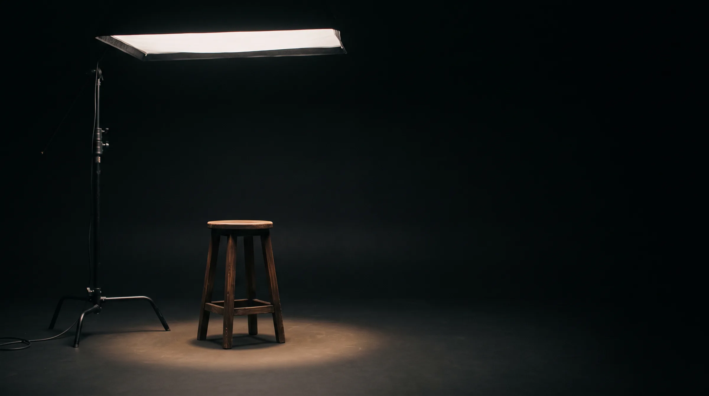
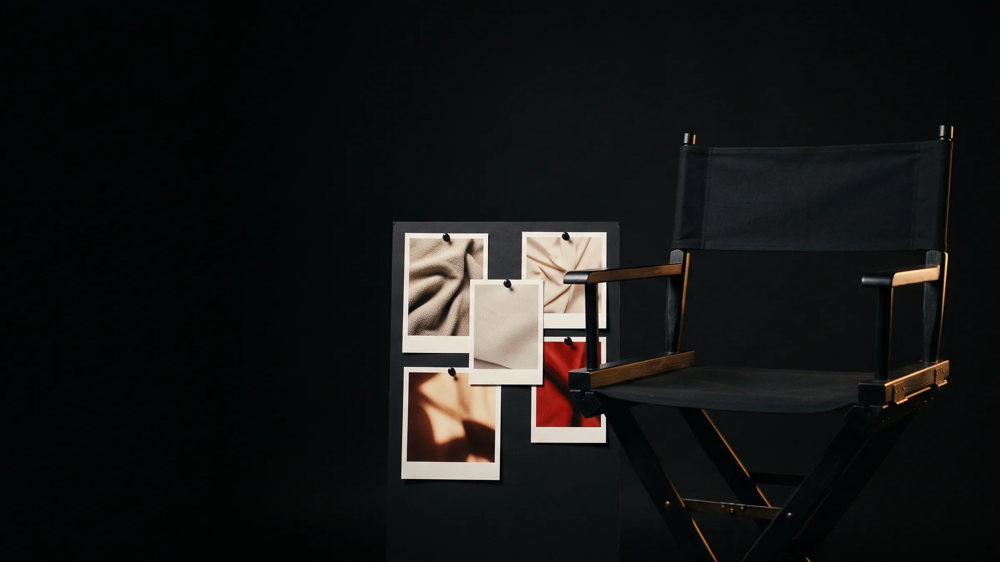
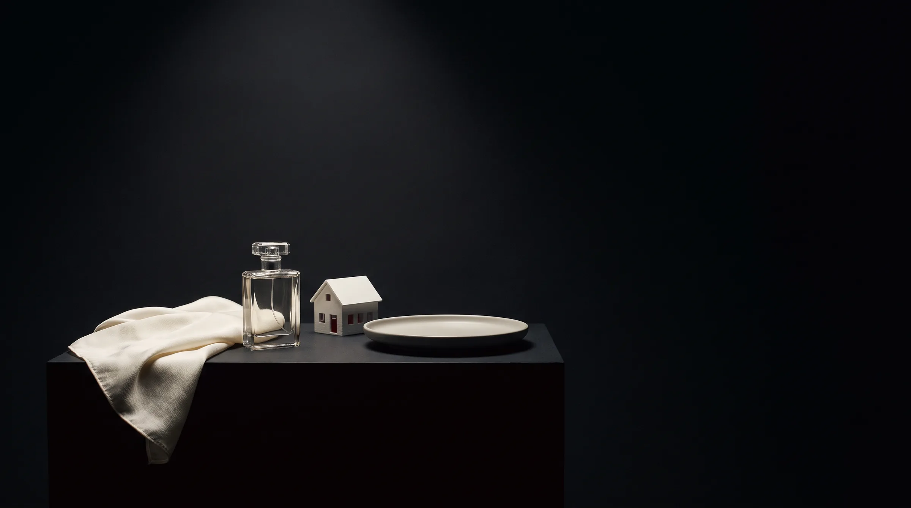

Estratégia e posicionamento
Diagnóstico de marca, leitura de mercado e concorrência, e um plano de comunicação com prioridades claras.
Agência criativa e estratégica em Catalão, Goiás, com projetos para marcas de todo o Brasil.
Estratégia, roteiro, set e edição sob o mesmo teto, na Casa Eclat.
O próximo capítulo da sua marca começa numa conversa.
Conversar sobre um projetoA Eclat trabalha para marcas que querem ser lembradas pelo que mostram e pelo jeito que mostram. Começamos pelo posicionamento: quem é a marca, com quem ela fala e aonde quer chegar.
Só depois vêm o roteiro, a imagem e o design. Cada projeto é desenhado para um cliente, nunca tirado de uma gaveta.
Diagnóstico de marca, leitura de mercado e concorrência, e um plano de comunicação com prioridades claras.
Conceito, logotipo, sistema visual e manual, para a marca se apresentar do mesmo jeito em todo lugar.
Campanhas, filmes institucionais e vídeos para redes, do roteiro à pós-produção, com equipe e estúdio próprios.
Linha editorial, calendário, fotografia e direção de arte para perfis com cara de revista, não de vitrine de promoção.
Campanhas pagas planejadas junto com a criação, para a peça certa chegar ao público certo.

A Casa Eclat é a estrutura própria de produção da agência, em Catalão. É ali que a ideia sai do papel: fotografia, vídeo, campanhas e bastidores, com a equipe da casa do roteiro à pós-produção.
Ter o set por perto dá controle sobre o resultado e encurta o caminho entre aprovar um conceito e ver a peça pronta.


Escreva pelo formulário ou chame no WhatsApp. A primeira conversa serve para entender o momento da marca; a proposta vem depois.